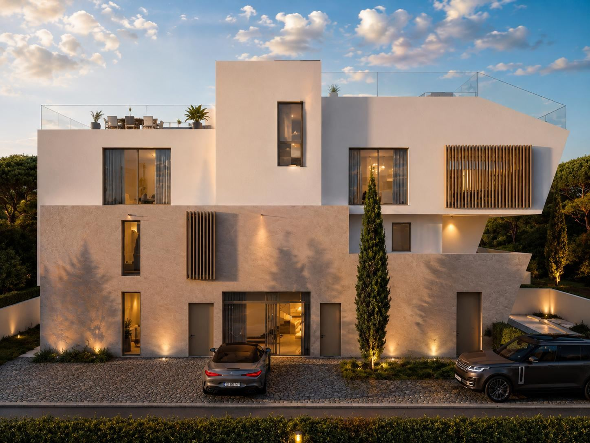
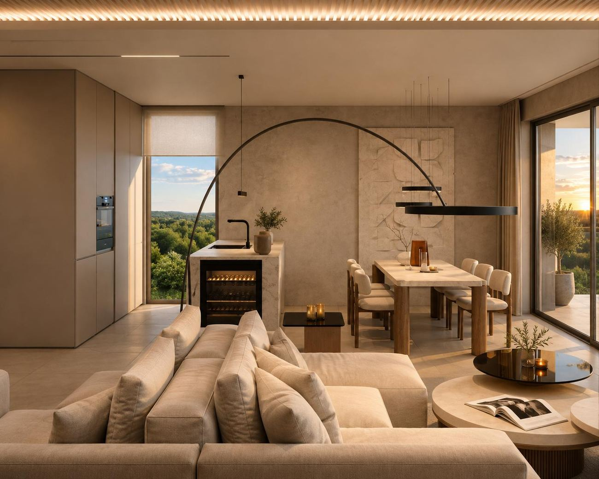

Chorvatsko · Sukošan u Zadaru
Rezidence u Jadranu.
Nový bytový dům s bazénem na dalmatském pobřeží. Prostorné byty se třemi ložnicemi a krytou terasou, pár minut od Zadaru.
3ložnice a 2 koupelny v každém bytě
32 m²obývací pokoj s kuchyní a jídelnou
25 m²krytá terasa
≈ 10 kmdo centra Zadaru
Lokalita
Klidné přímořské městečko kousek od Zadaru.
Sukošan leží na dalmatském pobřeží jihovýchodně od Zadaru. Najdete tu Marina Dalmacija, jednu z největších marín na Jadranu, pláže, promenádu s kavárnami a letiště Zadar na dosah. Hodí se pro vlastní letní bydlení i pro pronájem turistům.
- Marina Dalmacija přímo v Sukošanu
- Letiště Zadar kousek autem
- Pláže a promenáda u moře
- Historický Zadar a národní parky Kornati a Krka na výlet

Dispozice bytu
Prostor pro celou rodinu.
Každý byt má tři ložnice, dvě koupelny a velký obytný prostor propojený s krytou terasou. Hlavní ložnice má vlastní šatnu.
- Kuchyň, jídelna a obývací pokoj31,9 m²
- Hlavní ložnice11,8 m²
- Šatna u hlavní ložnice6,6 m²
- Ložnice 210,1 m²
- Ložnice 310,2 m²
- Koupelna 1 · Koupelna 25,8 · 5,7 m²
- Předsíň8,2 m²
- Krytá terasa24,9 m²
Výměry podle projektové dokumentace (byt v přízemí, 2026). Jednotlivé byty se mohou mírně lišit.

Vizualizace
Podívejte se dovnitř.


Chcete podklady a ceník?
Pošleme vám projektovou dokumentaci, aktuální dostupnost a cenu.
Chci podklady k projektu← Všechny zahraniční nemovitosti